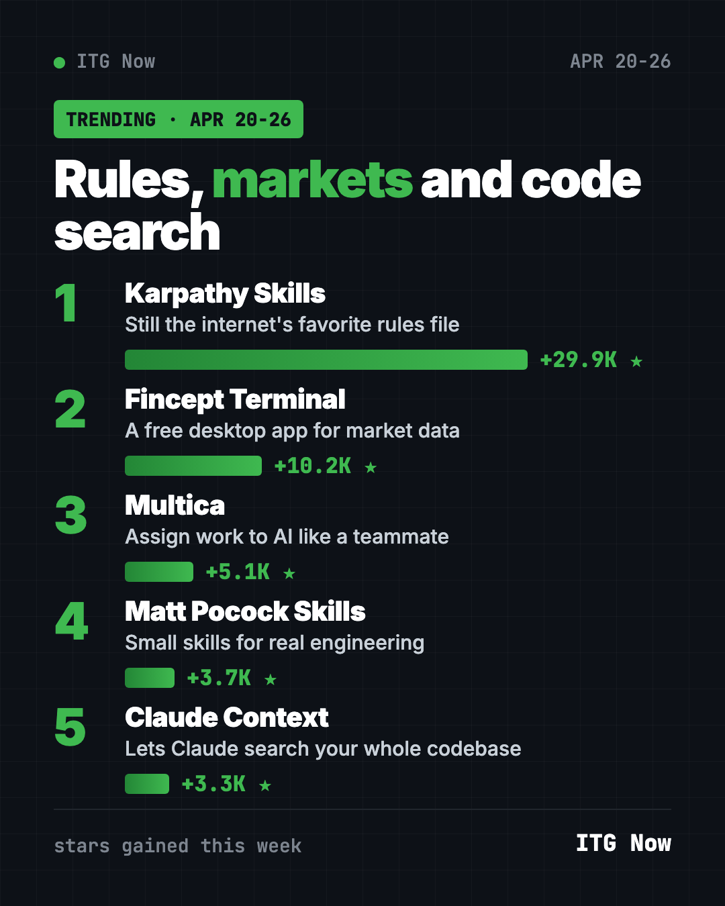
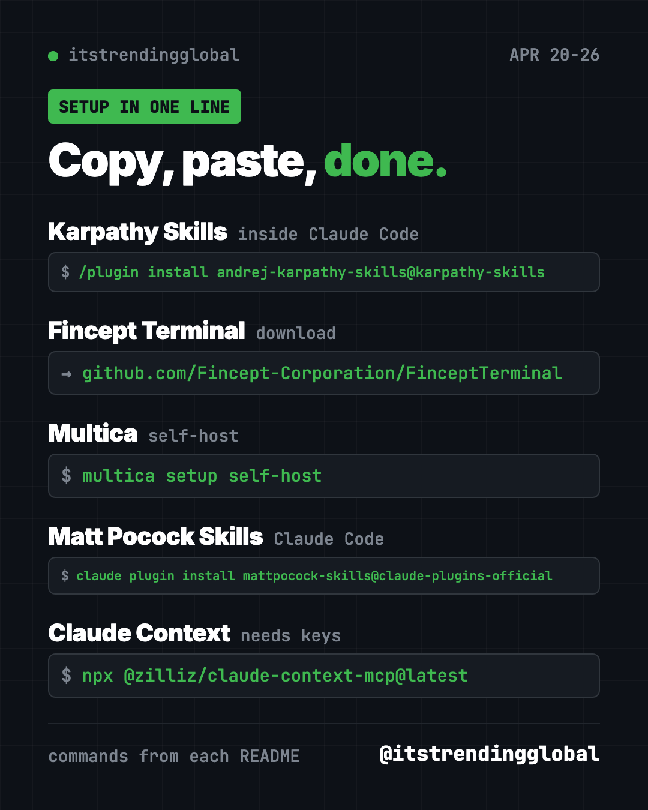

Home › Top repos › GitHub trending this week
Best GitHub Repos, Week of April 20 2026 (Free Picks)
Best GitHub repos week of April 20 2026: Karpathy Skills again, the free Fincept Terminal for market data, Multica, Matt Pocock's skills and Claude Context.
The best GitHub repos week of April 20 2026 were led, again, by Karpathy Skills. The four-rule file for Claude Code added about 29,900 stars. A free finance app, Fincept Terminal, came second with about 10,200.
Multica, Matt Pocock's skills and Claude Context filled out the five. Three of them make AI coding helpers smarter, and one is for anyone who follows the markets.
Key takeaways
- Karpathy Skills topped the chart for a second week in a row.
- Fincept Terminal is a free desktop app for market data and research. It is not investment advice.
- Multica keeps growing as a "task board" for AI agents.
- Matt Pocock's skills made their first appearance. The very next week they hit number one.
- Claude Context lets Claude Code search a huge codebase without reading all of it.

At a glance
| Repo | What it does | Best for | Stars this week | License |
|---|---|---|---|---|
| Karpathy Skills | Rules file that tames AI coders | Claude Code users | +29.9K | No license file listed |
| Fincept Terminal | Market data and research app | Curious investors, students | +10.2K | AGPL-3.0 |
| Multica | Assign tasks to AI agents | Small teams | +5.1K | Apache-2.0 with extra terms |
| Matt Pocock Skills | Small, editable AI skills | Developers | +3.7K | MIT |
| Claude Context | Code search for AI helpers | Big projects | +3.3K | MIT |
Star gains cover April 20 to 26, 2026. Totals were checked on GitHub on October 16, 2026.
1. Karpathy Skills: the rules file that will not quit
Stars: +29.9K this week · about 220K total now
What it is: A CLAUDE.md file, the note Claude Code reads before each job. Inspired by Andrej Karpathy's posts on AI coding mistakes, it asks the AI to state its guesses, keep code small, touch only what it must, and check its work against a clear goal.
Who it's for: Anyone whose AI helper writes 1,000 lines when 100 would do.
Everyday use: Ask for a small change to a spreadsheet script and get a small, tidy change back.
Install it: In Claude Code:
/plugin marketplace add forrestchang/andrej-karpathy-skills
/plugin install andrej-karpathy-skills@karpathy-skills
Or ask your AI helper:
Install the Karpathy Skills plugin from github.com/multica-ai/andrej-karpathy-skills and list its four rules.
See Karpathy Skills on GitHub · Read our full guide
2. Fincept Terminal: a free market-data desk
Stars: +10.2K this week · about 33K total now
What it is: A desktop app for market analytics, investment research and economic data. Think of the pricey terminals traders use, but with a free open-source edition. A paid Enterprise edition also exists; the GitHub version stays free.
Who it's for: Students learning finance and curious people who like charts and data.
Everyday use: Pull up a company's price history and economic data side by side for a class project.
Install it: Download the installer for Windows, Mac (Apple Silicon) or Linux from the releases page. On Ubuntu, after downloading the .deb file:
sudo apt install ./FinceptTerminal-*.deb
Or ask your AI helper:
Download the right Fincept Terminal installer for this computer from its GitHub releases and install it.
⚠️ Heads up: Fincept Terminal shows data and analysis tools. It does not tell you what to buy. We are not financial advisors, and nothing here is investment advice.
See Fincept Terminal on GitHub
3. Multica: AI agents with job tickets
Stars: +5.1K this week · about 53K total now
What it is: A self-hostable workspace where AI agents take on issues like teammates. They comment as they go and hand results back for you to approve.
Who it's for: Teams running Claude Code, Codex and other agents at once.
Everyday use: Assign a weekend's worth of small bug fixes and review them on Monday.
Install it:
curl -fsSL https://raw.githubusercontent.com/multica-ai/multica/main/scripts/install.sh | bash -s -- --with-server
multica setup self-host
Or ask your AI helper:
Help me self-host Multica from github.com/multica-ai/multica and assign it one test issue.
4. Matt Pocock Skills: a pro's own toolkit
Stars: +3.7K this week · about 293K total now
What it is: The skill files developer and teacher Matt Pocock uses every day. His README calls them skills for "real engineering," not "vibe coding." Each one is small and meant to be changed to fit how you work.
Who it's for: Developers who want proven habits without a heavy framework.
Everyday use: Have your AI helper plan a feature with you before writing any code.
Install it:
claude plugin install mattpocock-skills@claude-plugins-official
Or ask your AI helper:
Install mattpocock/skills from GitHub into Claude Code and tell me which three skills to try first.
See Matt Pocock Skills on GitHub · Read our full guide
5. Claude Context: search your whole codebase
Stars: +3.3K this week · about 13K total now
What it is: A plug-in from Zilliz that adds smart search to Claude Code. It stores your code in a vector database (a search index that finds things by meaning, not just exact words). Claude then pulls only the pieces it needs, which can cut costs on big projects.
Who it's for: Developers working on large codebases.
Everyday use: Ask "where do we send the welcome email?" and get the right file fast.
Install it: You need an OpenAI API key and a Zilliz Cloud key (sign-up on their site). Swap in your keys:
claude mcp add claude-context -e OPENAI_API_KEY=your-key -e MILVUS_ADDRESS=your-endpoint -e MILVUS_TOKEN=your-zilliz-key -- npx @zilliz/claude-context-mcp@latest
Or ask your AI helper:
Set up Claude Context from github.com/zilliztech/claude-context and index this project.

Which one should you try first?
- You use Claude Code: Karpathy Skills first, then Matt Pocock Skills.
- You follow the markets: Fincept Terminal, the only app here you just download and open.
- You run several AI agents: Multica.
- Your project is huge: Claude Context.
For the bigger picture, see the best GitHub repos of April 2026 and April 2026 AI news. The week before is April 13 to 19; next is April 27 to May 3.
FAQ
What were the best GitHub repos the week of April 20, 2026?
Karpathy Skills, Fincept Terminal, Multica, Matt Pocock Skills and Claude Context, ranked by stars gained.
Is Fincept Terminal free?
The open-source edition on GitHub is free under AGPL-3.0. There is also a paid Enterprise edition.
Can Fincept Terminal tell me what stocks to buy?
No. It shows data and research tools. Decisions are yours, and for real money choices you should talk to a licensed advisor.
Does Claude Context cost money?
The plug-in is free. It uses an OpenAI key and a Zilliz Cloud database, which may charge depending on use.
Who is Matt Pocock?
A well-known TypeScript teacher. His README says about 60,000 developers get his newsletter.
Want a new free tool explained every day? Follow @gittrendingglobal on Instagram.
Keep reading

Trending GitHub Repos October 2026: The Top 5 So Far
The trending GitHub repos of October 2026 so far: a free Photoshop-style editor, an AI art studio, a big AI model for gaming PCs and more, explained.

Trending GitHub Repos This Week, Oct 5 2026: The Top 5
Trending GitHub repos this week Oct 5 2026: Matt Pocock's skills, the openGym workout tracker, e2e testing, HyperFrames video and claude-mem memory.

GitHub Trending September 28, 2026: Hindsight and Paperclip
GitHub trending September 28 2026: Hindsight, Paperclip, NVIDIA's OpenShell and a free 542-lesson AI course, with setup steps for each.